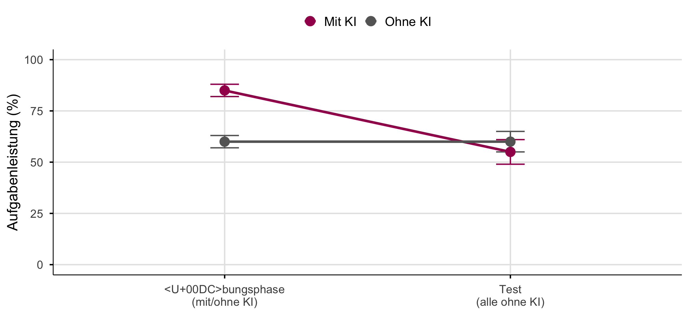
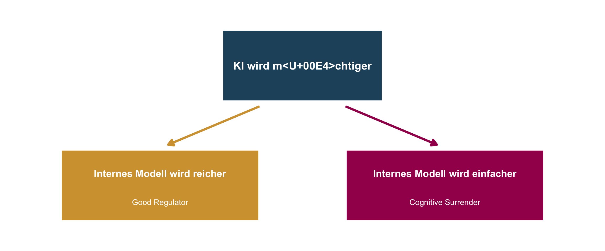

![]()

KI in der Hochschulbildung: Refresher 2026
Verstehen kann man nicht auslagern
80% der Menschen folgen einer KI-Empfehlung, auch wenn sie falsch liegt.
Ihre Konfidenz steigt dabei.
Was wir bisher gemacht haben
Kurs 1: Was ist KI?
Sprachmodelle als statistische Mustervervollständigung
Kurs 2: Lernen verstehen
Arbeitsgedächtnis, Cognitive Load, erwünschte Schwierigkeiten
Kurs 3: Implementierung
CLT als Designprinzip, Worked Examples, KI-Werkzeuge bauen
Der rote Faden: Was du bereits weisst, bestimmt, ob KI dir hilft oder schadet.
Die zentrale Einsicht
Kernaussage: Alles Lernen muss durch das Nadelöhr des Arbeitsgedächtnisses. Keine KI kann diesen biologischen Engpass umgehen (Sweller 2024).
Was passiert, wenn Menschen KI tatsächlich beim Denken einsetzen?
Neue Forschung gibt Antworten.
Wie verändert KI unser Denken?
“Wenn KI kognitiv leistungsfähig genug ist, um menschliches Denken zu ergänzen oder zu ersetzen: tut sie das?”
Shaw & Nave (2026): “Thinking: Fast, Slow, and Artificial”
- 3 präregistrierte Studien
- N = 1’372 Teilnehmende, 9’593 Trials
- Cognitive Reflection Test mit manipulierter KI-Genauigkeit
System 1 und System 2
System 1: Schnell
Intuitiv, automatisch, mühelos
Heuristiken, Mustererkennung, erste Eindrücke
System 2: Langsam
Deliberativ, kontrolliert, anstrengend
Logisches Denken, Planung, kritische Analyse
Das klassische Dual-Process-Modell (Kahneman 2011). Aber: es geht von rein interner Kognition aus.
System 3: Künstliche Kognition

Shaw & Nave: KI ist nicht nur ein Werkzeug, sondern ein funktionaler kognitiver Agent, der menschliches Denken ergänzen, ersetzen oder verzerren kann (Shaw und Nave 2026).
Die Routen der Kognition
| Route | System(e) | Beschreibung |
|---|---|---|
| Intuition | S1 | Schnelle, automatische Reaktion ohne Reflexion |
| Deliberation | S2 | Bewusstes Nachdenken bei Unsicherheit |
| Cognitive Offloading | S2 → S3 | Strategische Delegation: S2 bleibt aktiv und bewertet |
| Cognitive Surrender | S1 → S3 | Unkritische Übernahme: S2 wird umgangen |
| Autopilot | S3 | Stimulus → KI → Antwort, ohne interne Verarbeitung |
Der entscheidende Unterschied: Offloading ist bewusst und strategisch (System 2 aktiv). Surrender ist automatisch und unkritisch (System 2 umgangen).
Offloading vs. Kapitulation

Studie 1: Cognitive Surrender in Aktion

93% folgten korrekter KI. 80% folgten falscher KI. Genauigkeit fiel unter die Baseline. Cohen’s h = 0.81
Konfidenz steigt, auch wenn KI falsch liegt

+12 Prozentpunkte Konfidenz durch KI-Zugang, obwohl ca. 50% der KI-Antworten falsch waren. Die Illusion der Kompetenz.
Kann man Surrender verhindern?

Studie 2 (Zeitdruck):
Zeitdruck eliminiert Surrender nicht. KI puffert Zeitdruck-Kosten, wenn korrekt.
Studie 3 (Anreize + Feedback):
Override-Rate bei falscher KI verdoppelt sich (20% → 42%). Aber: 58% folgen trotzdem.
Wer ist anfällig?
Hohes Vertrauen in KI
Mehr Surrender
Konsultieren KI häufiger, folgen falschen Empfehlungen öfter
Hohe Need for Cognition
Mehr Widerstand
Denken gerne nach, nutzen KI weniger
Höherer Fluid IQ
Mehr Widerstand
Erkennen fehlerhafte KI besser, überstimmen häufiger
Aber: Niemand ist immun. Selbst die widerstandsfähigsten Teilnehmenden zeigten Surrender-Muster.
Das Paradox neu interpretiert

Bastani et al.: Schüler mit KI-Zugang zeigten klassische Cognitive Surrender (Bastani u. a. 2025). Sie nutzten den S1→S3-Pfad (Kapitulation), nicht den S2→S3-Pfad (strategisches Offloading).
Brauchen wir “System 3”?
Die empirischen Befunde sind überzeugend. Aber ist “System 3” als theoretisches Konstrukt notwendig?
Was bereits erklärt war:
- Cognitive Offloading (Risko und Gilbert 2016)
- Automation Bias
- Extended Mind (Clark und Chalmers 1998)
- Expertise Reversal (Kalyuga 2009)
Was Shaw & Nave hinzufügen:
- Empirischer Nachweis der Kapitulation mit Effektstärken
- Surrender ≠ Offloading (qualitativ verschieden)
- Konfidenz-Inflation als Marker
- Robustheit unter verschiedenen Bedingungen
Der Kern ist vielleicht einfacher: KI macht kognitive Abkürzungen leichter. Was Shaw & Nave “Surrender” nennen, lässt sich auch als Offloading verstehen, das die Schwelle zum Outsourcing überschritten hat, wo eigenes Denken nicht mehr stattfindet. Der Wert des Papers liegt in der empirischen Demonstration, nicht notwendigerweise in der theoretischen Architektur.
Cognitive Surrender beschreibt was passiert.
Aber warum ist es so schädlich? Was genau geht verloren?
Wissen ist nicht Information
Information:
Daten in einem externen System. Stehen still. Formen nichts. Warten darauf, abgerufen zu werden.
Ein Lehrbuch auf dem Regal liest sich nicht selbst.
Wissen:
In den Geist integriert. Formt Wahrnehmung, Denken, Handeln. Erzeugt Vorhersagen.
Verändert, was du siehst, bevor du bewusst nachdenkst.
Die Annahme, KI mache internes Wissen überflüssig, verwechselt diese beiden Kategorien.
Experten sehen anders
Schach (Chase & Simon, 1973)
Meister erinnern sich an sinnvolle Stellungen weit besser als Novizen.
Bei zufälligen Anordnungen: kein Vorteil.
Die Expertise ist perzeptuell: Meister sehen Strukturen, nicht Figuren.
Physik (Chi et al., 1981)
Experten kategorisieren nach tiefen Prinzipien (Energieerhaltung).
Novizen kategorisieren nach Oberflächen (schiefe Ebene).
Die Expertise ist strukturell: Experten sehen Ursachen, nicht Erscheinungen.
Expertise besteht aus reichhaltig organisierten Schemata, die als generative Modelle funktionieren: sie erzeugen Vorhersagen, unterstützen kausales Denken und revidieren sich, wenn Vorhersagen scheitern.
Wissen erzeugt Vorhersagen
Ein erfahrener Forscher liest eine neue Studie. Vor jeder bewussten Evaluation sieht er die Studie anders als ein Studierender:
- Stichprobenzusammensetzung, Wahl der Outcome-Masse, kontrollierte Kovariaten
- Diese stehen als methodische Entscheidungen mit Konsequenzen hervor
Der Forscher kann simulieren: Was wäre, wenn die Autoren eine aktive Kontrollgruppe gehabt hätten?
Ein Novize hat keine Basis für Überraschung.
Fast jedes Ergebnis ist mit seinen diffusen Erwartungen vereinbar.
Anstrengung ist der Mechanismus
“Conditions that slow the rate of apparent learning often optimize long-term retention and transfer.”
Robert Bjork (E. L. Bjork und Bjork 2011)
Das Gehirn baut Erkennungsroutinen, die durch wiederholte Erfahrung trainiert werden. Jede schwierige Aufgabe schärft das System, das zukünftige Urteile schneller und besser kalibriert macht. Wenn KI die Anstrengung eliminiert, wird diese Routine nie gebaut.
Das Evaluationsparadox
Um KI-Output zu bewerten, brauchst du die Kompetenz, die erst durch eigenes Lernen entsteht. Metakognitives Monitoring ist nicht kontextfrei: es hängt von Domänenwissen ab (R. A. Bjork 1994).
Kannst du diesen KI-Output bewerten?
Prompt: “Erkläre die Pathophysiologie der diabetischen Ketoazidose.”
KI-Antwort: “Bei DKA führt Insulinmangel zu unkontrollierter Lipolyse. Die freigesetzten Fettsäuren werden in der Leber zu Ketonkörpern (Acetoacetat, β-Hydroxybutyrat) metabolisiert. Die resultierende metabolische Azidose mit erhöhter Anionenlücke triggert kompensatorische Kussmaul-Atmung…”
Ist das korrekt? Fehlt etwas? Ist etwas subtil falsch?
Deine Studierenden sind in genau dieser Position für DEIN Fach.
Wissen und Denken sind nicht trennbar
“Critical thinking is not a skill. There is not a set of critical thinking skills that can be acquired and deployed regardless of context.”
Daniel Willingham (Willingham 2008)
Kompositionelle Generalisierung erfordert strukturierte Repräsentationen. Du kannst Elemente nicht rekombinieren, die du nicht als abstrakte, trennbare Komponenten repräsentiert hast.
Der Physiker, der nach Energieerhaltung kategorisiert, hat die Domäne in abstrakte Primitive zerlegt, die über Situationen transferieren. Der Novize ist an Oberflächen gebunden.
“Zukunftskompetenzen” ohne Wissen imitieren Bewertung ohne Substanz.
Wann Offloading hilft, wann es schadet
Hilft:
Wenn es Leistungseinschränkungen entlastet, während Kompetenz erhalten bleibt.
Chirurgin nutzt Checkliste → Aufmerksamkeit frei für Urteil
Programmierer nutzt Linter → Fokus auf Architektur
Die Kompetenz ist intakt. Das Werkzeug entlastet eine Performance-Grenze.
Schadet:
Wenn die vermiedene Anstrengung genau der Mechanismus war, der Kompetenz aufgebaut hätte.
KI schreibt den Aufsatz → Formulieren nie geübt
KI löst die Aufgabe → Problemlösen nie trainiert
Die Kompetenz fehlt. Das Werkzeug ersetzt eine Lern-Gelegenheit.
Ein Taschenrechner erweitert den Mathematiker. Derselbe Taschenrechner ersetzt den Schüler, der Division noch nicht versteht (Grinschgl, Papenmeier, und Meyerhoff 2021).
Je mächtiger das Werkzeug, desto mehr Wissen brauchst du

“Every good regulator of a system must be a model of that system.” (Conant und Ashby 1970)
Je fähiger das System, desto reichhaltiger muss das Modell des Nutzers sein. Das ist das Gegenteil von dem, was gerade passiert.
Was KI ersetzt
Abrufen
Wissen aus dem Gedächtnis aktivieren
Generieren
Eigene Lösungen produzieren
Verknüpfen
Elemente vergleichen und integrieren
Überwachen
Gegen interne Kriterien bewerten
Diese Operationen bauen Schemata auf. Bei Cognitive Surrender werden alle vier an die KI delegiert.
Was das für die Lehre bedeutet
Internes Modell trainieren:
KI erzeugt Vorhersagen, die Lernende bewerten.
KI generiert falsche Lösungen, Studierende finden Fehler.
KI gibt Feedback auf eigene Überlegungen.
Internes Modell umgehen:
KI liefert Bewertungen, die Lernende konsumieren.
KI generiert Lösungen, die Studierende abgeben.
KI ersetzt das eigene Denken.
Sparringspartner, nicht Orakel.
Der Expertise-Umkehr-Effekt
Interaktiv: Klicke auf die Prozentwerte, um zu sehen, wie sich die optimale Lehrmethode je nach Vorwissen verändert.
config = ({
// Color palette
colors: {
highSupport: "#A63D2F",
lowSupport: "#6E6560",
neutral: "#1A1714",
background: "#f5f5f5"
},
// Line equations: y = intercept + slope * x
lines: {
high: { intercept: 65, slope: -0.4 },
low: { intercept: 25, slope: 0.4 }
},
// Input options
steps: [0, 20, 40, 60, 80, 100],
defaultValue: 20,
// Plot dimensions
plot: {
width: 900,
height: 480,
margins: { left: 70, bottom: 60, top: 30, right: 40 }
},
// Labels
labels: {
highSupport: "Hohe Unterstützung",
lowSupport: "Niedrige Unterstützung",
highExamples: ["Worked Examples", "Direkte Instruktion"],
lowExamples: ["Problembasiertes Lernen", "Eigene Lösungswege"]
}
})
crossoverPoint = {
const { high, low } = config.lines;
return (high.intercept - low.intercept) / (low.slope - high.slope);
}
calcY = (line, x) => line.intercept + line.slope * x
viewof vorwissen = {
const input = Inputs.radio(config.steps, {
value: config.defaultValue,
label: "",
format: x => x + "%"
});
input.style.display = "none";
return input;
}
currentState = {
const x = vorwissen ?? config.defaultValue;
const highY = calcY(config.lines.high, x);
const lowY = calcY(config.lines.low, x);
const isHighBetter = x <= crossoverPoint;
return {
x,
highY,
lowY,
isHighBetter,
optimalY: isHighBetter ? highY : lowY,
suboptimalY: isHighBetter ? lowY : highY,
optimalLabel: isHighBetter ? config.labels.highSupport : config.labels.lowSupport,
optimalColor: isHighBetter ? config.colors.highSupport : config.colors.lowSupport,
suboptimalColor: isHighBetter ? config.colors.lowSupport : config.colors.highSupport
};
}
expertisePlot = {
const { colors, lines, plot, labels } = config;
const { x, highY, lowY, isHighBetter, optimalY, suboptimalY, optimalColor, suboptimalColor } = currentState;
const highLineData = [{x: 0, y: calcY(lines.high, 0)}, {x: 100, y: calcY(lines.high, 100)}];
const lowLineData = [{x: 0, y: calcY(lines.low, 0)}, {x: 100, y: calcY(lines.low, 100)}];
const labelOffsetY = 7;
const exampleBaseY = calcY(lines.high, 0) + labelOffsetY;
return Plot.plot({
width: plot.width,
height: plot.height,
marginLeft: plot.margins.left,
marginBottom: plot.margins.bottom,
marginTop: plot.margins.top,
marginRight: plot.margins.right,
style: { fontSize: "16px" },
x: {
domain: [0, 100],
label: "Vorwissen →",
labelOffset: 45,
ticks: [0, 50, 100],
tickFormat: d => d === 0 ? "Niedrig" : d === 50 ? "Mittel" : "Hoch"
},
y: {
domain: [0, 100],
label: "↑ Lerneffekt",
labelOffset: 50,
grid: true
},
marks: [
Plot.line(highLineData, {x: "x", y: "y", stroke: colors.highSupport, strokeWidth: 3}),
Plot.line(lowLineData, {x: "x", y: "y", stroke: colors.lowSupport, strokeWidth: 3}),
Plot.ruleX([x], {stroke: colors.neutral, strokeWidth: 1.5, strokeDasharray: "8,5"}),
Plot.dot([{x, y: suboptimalY}], {
x: "x", y: "y",
fill: suboptimalColor,
r: 8,
opacity: 0.4
}),
Plot.dot([{x, y: optimalY}], {
x: "x", y: "y",
fill: optimalColor,
r: 14,
stroke: "white",
strokeWidth: 3
}),
Plot.text([{x: 15, y: exampleBaseY}], {
x: "x", y: "y", text: [labels.highExamples[0]], fill: colors.highSupport, fontSize: 13
}),
Plot.text([{x: 15, y: exampleBaseY - 6}], {
x: "x", y: "y", text: [labels.highExamples[1]], fill: colors.highSupport, fontSize: 13
}),
Plot.text([{x: 85, y: exampleBaseY}], {
x: "x", y: "y", text: [labels.lowExamples[0]], fill: colors.lowSupport, fontSize: 13
}),
Plot.text([{x: 85, y: exampleBaseY - 6}], {
x: "x", y: "y", text: [labels.lowExamples[1]], fill: colors.lowSupport, fontSize: 13
}),
Plot.text([{x: 88, y: calcY(lines.high, 100) - 5}], {
x: "x", y: "y", text: [labels.highSupport], fill: colors.highSupport, fontSize: 15, fontWeight: "bold"
}),
Plot.text([{x: 12, y: calcY(lines.low, 0) - 5}], {
x: "x", y: "y", text: [labels.lowSupport], fill: colors.lowSupport, fontSize: 15, fontWeight: "bold"
})
]
});
}
buttonGroup = {
const { x, optimalColor } = currentState;
const { colors, steps } = config;
const buttonStyle = (isSelected, selectColor) => `
padding: 12px 18px;
border: none;
background: ${isSelected ? selectColor : colors.background};
color: ${isSelected ? 'white' : '#333'};
font-size: 1em;
font-weight: ${isSelected ? 'bold' : 'normal'};
cursor: pointer;
border-right: 1px solid #ddd;
transition: background 0.15s ease;
`;
const container = html`<div style="display: flex; border-radius: 0; overflow: hidden; border: 2px solid #ddd;"></div>`;
steps.forEach(v => {
const isSelected = x === v;
const selectColor = v <= crossoverPoint ? colors.highSupport : colors.lowSupport;
const btn = html`<button style="${buttonStyle(isSelected, selectColor)}">${v}%</button>`;
btn.onclick = () => {
viewof vorwissen.value = v;
viewof vorwissen.dispatchEvent(new Event('input', {bubbles: true}));
};
container.appendChild(btn);
});
return container;
}
html`<div style="display: flex; align-items: center; gap: 40px;">
<div>${expertisePlot}</div>
<div style="display: flex; flex-direction: column; align-items: center; gap: 20px; min-width: 280px;">
<div style="font-weight: bold; font-size: 1.1em;">Vorwissen des Lernenden</div>
<div>${buttonGroup}</div>
<div style="font-size: 1.3em; text-align: center; padding: 15px; background: ${currentState.optimalColor}22; border-radius: 0; border-left: 4px solid ${currentState.optimalColor};">
<span style="color: ${currentState.optimalColor}; font-weight: bold;">${currentState.optimalLabel}</span><br>
<span style="font-size: 0.8em; color: #6E6560;">ist effektiver</span>
</div>
</div>
</div>`Der Expertise-Umkehr-Effekt (Kalyuga 2009): Die richtige Unterstützung hängt vom Vorwissen ab.
Drei Kernaussagen
1. Cognitive Surrender ist ein kognitiver Default, kein individuelles Versagen. 80% folgen falscher KI, selbst Anreize eliminieren es nicht vollständig.
. . .
2. Verstehen kann man nicht auslagern. Das interne Modell, das Wahrnehmung formt und Bewertung ermöglicht, entsteht nur durch eigene kognitive Arbeit.
. . .
3. Je mächtiger die KI, desto mehr Wissen brauchen die Nutzenden, nicht weniger. Das Good-Regulator-Theorem lässt keinen anderen Schluss zu.
Designprinzipien für KI in der Lehre
Generative Modelle zuerst
Schemata aufbauen, bevor KI-Zugang für Kernprozesse
Sparringspartner
KI erzeugt Vorhersagen, Lernende bewerten
Scaffolding anpassen
Unterstützung an Vorwissen kalibrieren
Surrender adressieren
Metakognition fördern, Bewertung einüben
Nicht anti-KI, sondern pro-Lernen. Die Frage ist nicht ob, sondern wann und wie KI eingesetzt wird.
KI-Werkzeuge sind für Experten gemacht.
Unsere Aufgabe: Studierende zu Experten machen, die KI sinnvoll nutzen können.
Fundamente zuerst aufbauen. Scaffolding an Vorwissen anpassen. Surrender erkennen und verhindern.
Referenzen
Bastani, Hamsa, Osbert Bastani, Alp Sungu, Haosen Ge, Özge Kabakcı, und Rei Mariman. 2025. „Generative AI Without Guardrails Can Harm Learning: Evidence from High School Mathematics“. Proceedings of the National Academy of Sciences of the United States of America 122 (26): e2422633122. https://doi.org/10.1073/pnas.2422633122.
Bjork, Elizabeth Ligon, und Robert A. Bjork. 2011. „Making Things Hard on Yourself, but in a Good Way: Creating Desirable Difficulties to Enhance Learning“. In Psychology and the Real World: Essays Illustrating Fundamental Contributions to Society, 56–64. New York, NY, US: Worth Publishers.
Bjork, Robert A. 1994. „Memory and Metamemory Considerations in the Training of Human Beings“. In Metacognition: Knowing about Knowing, 185–205. Cambridge, MA, US: The MIT Press. https://doi.org/10.7551/mitpress/4561.001.0001.
Clark, Andy, und David Chalmers. 1998. „The Extended Mind“. Analysis 58 (1): 7–19. https://www.jstor.org/stable/3328150.
Conant, Roger C., und W. Ross Ashby. 1970. „Every Good Regulator of a System Must Be a Model of That System“. International Journal of Systems Science 1 (2): 89–97. https://doi.org/10.1080/00207727008920220.
Grinschgl, Sandra, Frank Papenmeier, und Hauke S Meyerhoff. 2021. „Consequences of Cognitive Offloading: Boosting Performance but Diminishing Memory“. Quarterly Journal of Experimental Psychology (2006) 74 (9): 1477–96. https://doi.org/10.1177/17470218211008060.
Kahneman, Daniel. 2011. Thinking, Fast and Slow. New York: Farrar, Straus; Giroux.
Kalyuga, Slava. 2009. „The Expertise Reversal Effect“. In Managing Cognitive Load in Adaptive Multimedia Learning, 58–80. IGI Global Scientific Publishing. https://doi.org/10.4018/978-1-60566-048-6.ch003.
Risko, Evan F., und Sam J. Gilbert. 2016. „Cognitive Offloading“. Trends in Cognitive Sciences 20 (9): 676–88. https://doi.org/10.1016/j.tics.2016.07.002.
Shaw, Steven D., und Gideon Nave. 2026. „Thinking—Fast, Slow, and Artificial: How AI Is Reshaping Human Reasoning and the Rise of Cognitive Surrender“. SSRN Scholarly Paper. Rochester, NY. 11. Januar 2026. https://doi.org/10.2139/ssrn.6097646.
Sweller, John. 2024. „Cognitive Load Theory and Individual Differences“. Learning and Individual Differences 110 (Februar): 102423. https://doi.org/10.1016/j.lindif.2024.102423.
Willingham, Daniel T. 2008. „Critical Thinking: Why Is It So Hard to Teach?“ Arts Education Policy Review 109 (4): 21–32. https://doi.org/10.3200/AEPR.109.4.21-32.
KI in der Lehre: Refresher 2026